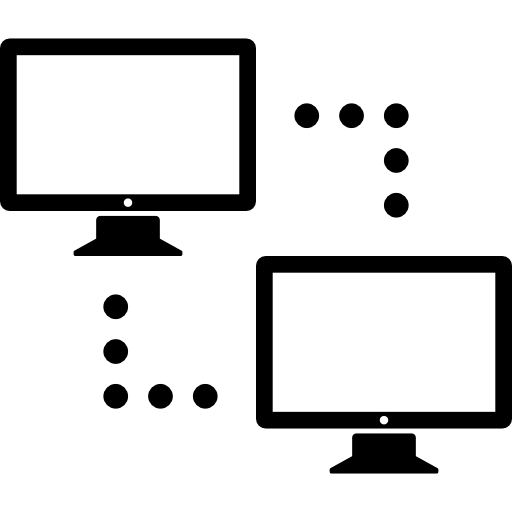

-

Instalación de Redes Informáticas
El objetivo de la instalación de redes informáticas es facilitar la conexión entre dos o más de estos dispositivos para que puedan compartir información y recursos. Las redes informáticas habituales en los hogares son las redes PAN y LAN. Las primeras permiten conectar smartphones, tablets, impresoras, videoconsolas, ordenadores portátiles o equipos de escritorio usando un cable. Su principal inconveniente es que tienen cobertura limitada (hasta 10 metros).
-
Optimización de Redes Informáticas
La optimización de redes informáticas, sea en el hogar o en la empresa, comprende la correcta instalación y conexión de los equipos informáticos a través de un sistema complejo de cables y dispositivos físicos o inalámbricos, con el fin de compartir servicios, información y aparatos disponibles como televisiones, equipos de música, sistemas de domótica y vigilancia, impresoras…
-
Soluciones Técnicas de Redes ya existentes
Gestionar, interpretar y apoyar proyectos de redes de comunicación de datos. Administrar, instalar y configurar redes de cómputo y sistemas tele informáticos, centros de servicios integrados, servicios de acceso a Internet, servidores y redes corporativas de información como Intranet y Extranet. Administrar e Investigar sobre tecnologías y políticas de seguridad informática en redes de datos. Atender mesas de ayuda para atender solicitudes de soporte tecnológico sobre problemas relacionados con las redes. Realizar mantenimiento de infraestructura tecnológica, desde computadores hasta redes modernas de información. Elaborar informes detallados sobre el estado y mantenimiento de equipos de computo, redes de datos y demás infraestructura tecnológica. Supervisar la planificación, diseño y montaje de redes y telecomunicaciones.

-
Reparación de equipos Informáticos
Reparamos todo tipo de equipos informáticos y perisféricos: Ordenadores fijos y portátiles, tablets, móviles, impresoras, TPVs, cámaras IP y de CCTV, entre otros. Nuestro servicio se caracteriza por lo siguientes: Diagnóstico preciso de la avería y presupuesto al cliente antes de iniciar el proceso de reparación. Además el presupuesto en muchos casos le recomendamos al cliente posibles mejoras a realizar sobre el equipo, si es que las hubiera. Mantenemos al cliente totalmente informado durante el proceso de la resolución de la avería (informe de cuando recibimos su material, de dudas que podamos tener sobre el servicio tecnico a realizar, posibles problemas que nos encontremos hasta tener la avería totalmante solventada…).